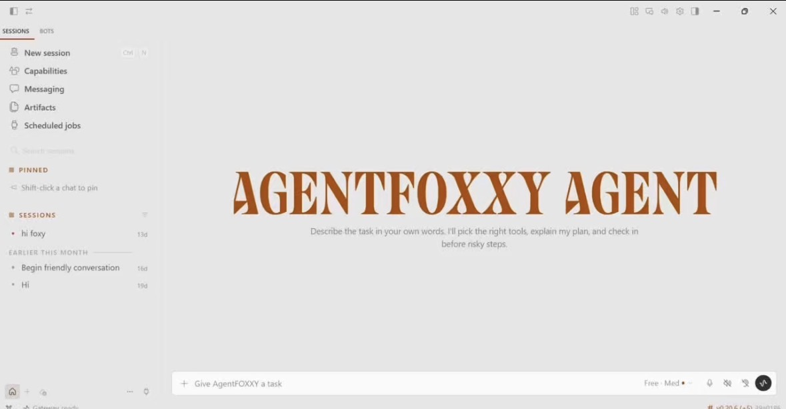

Plans, then acts
Move from a request to real terminal commands, browser actions, file edits and finished tasks.
OPEN SOURCE · BUILT TO DO THE WORK
AgentFOXXY is an autonomous AI agent that plans a job, uses real tools, writes and runs code, and turns hard-won solutions into reusable skills. Choose your model, your machine, and how you want to work.
MIT licensed · 35+ AI providers · Linux, macOS, Windows & Android

MORE THAN A CHAT WINDOW
Describe the outcome in plain language. AgentFOXXY breaks it into steps, works with your files, terminal and browser, checks its work, and keeps useful knowledge for next time.
Move from a request to real terminal commands, browser actions, file edits and finished tasks.
Save solutions as reusable skills, improve them through experience, and keep context between sessions.
Connect 35+ providers, use an OpenAI-compatible endpoint, or run locally with Ollama.
Run on a laptop, server, Docker or Termux, and reach it from supported messaging platforms.
Schedule recurring jobs in plain language and let the agent send results where you need them.
Pick your tools and providers. Risky commands can pause for your approval before they run.
UP AND RUNNING
Use the desktop app, run the installer, or install from source. The installer handles the main runtime dependencies.
LINUX · macOS · WSL2 · ANDROID / TERMUX
curl -fsSL https://raw.githubusercontent.com/usmanxg58-byte/AgentFOXXY/main/scripts/install.sh | bash
source ~/.bashrc
agentfoxxy setupThe setup wizard helps configure your model, keys and tools.
WINDOWS
iex (irm https://raw.githubusercontent.com/usmanxg58-byte/AgentFOXXY/main/scripts/install.ps1)
agentfoxxy setupFor the graphical installer, grab the latest Windows release.
NO TERMINAL REQUIRED
Get the latest Windows installer or macOS disk image for Apple Silicon or Intel.
Download the latest releasegit clone https://github.com/usmanxg58-byte/AgentFOXXY.git
cd AgentFOXXY
uv pip install -e ".[all]"
agentfoxxy setupAgentFOXXY is MIT-licensed. Your selected model provider or hosted services may charge separately; local models such as Ollama are an option if you want to keep model inference on your machine. Read the full README before installing.
YOUR NEXT TASK, HANDLED
Set up your model, give AgentFOXXY a job, and see where it can take the busywork off your plate.
GOOD TO KNOW
AgentFOXXY is open source under the MIT license. The model provider, API, or hosted service you choose may have its own costs.
The project supports 35+ providers, including OpenAI, Anthropic, Gemini, DeepSeek and Ollama. You choose the provider and credentials.
Use it on Linux, macOS, Windows, Android via Termux, Docker, or a server. Check the repository README for current platform requirements.
Find releases and source on GitHub, or follow @theagentfoxxy on X.